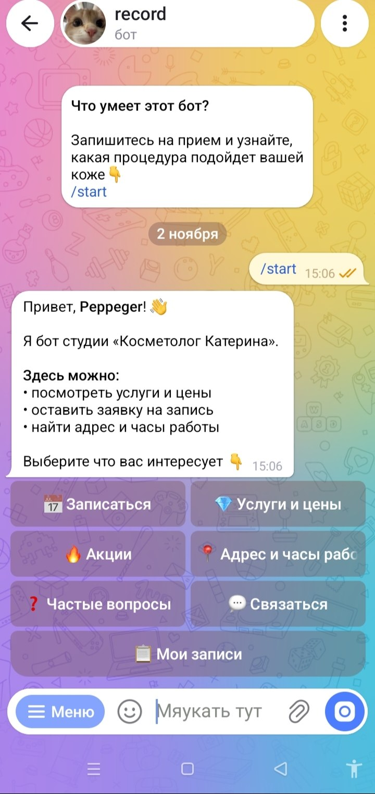
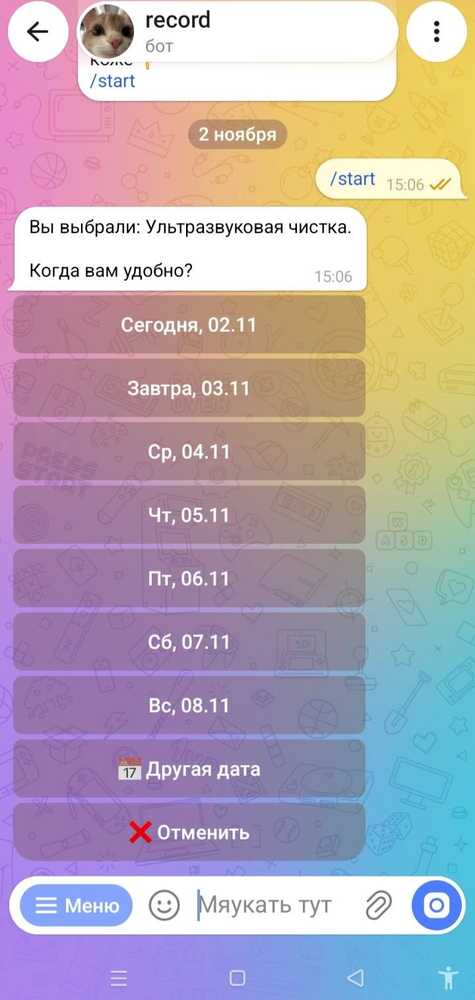
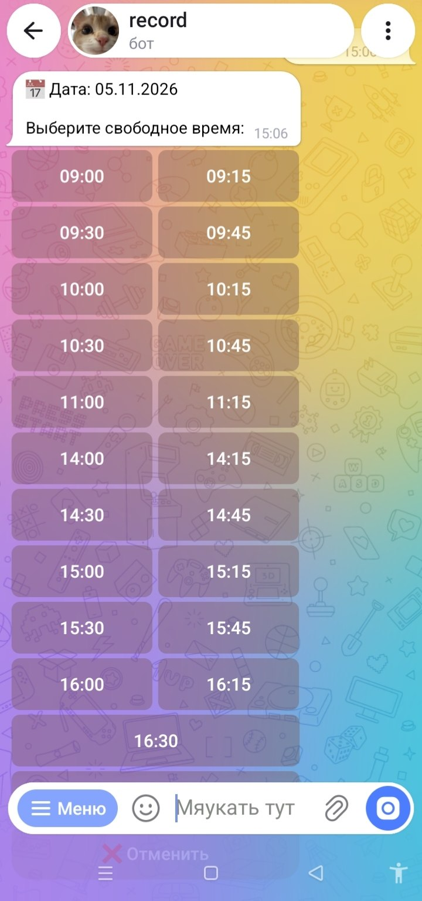
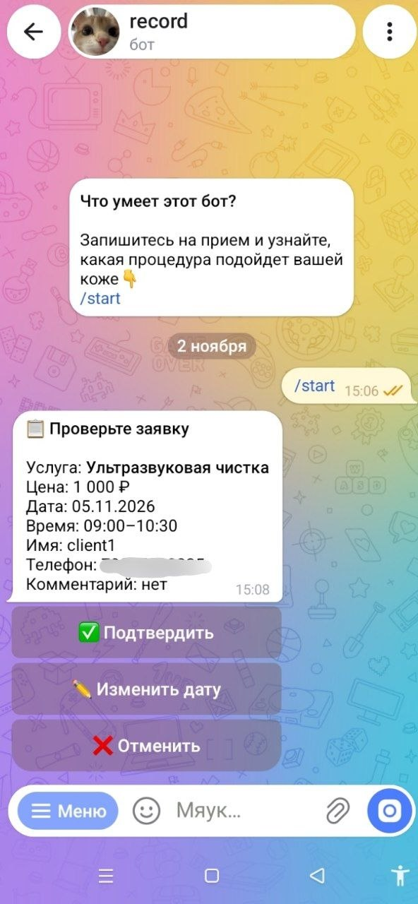
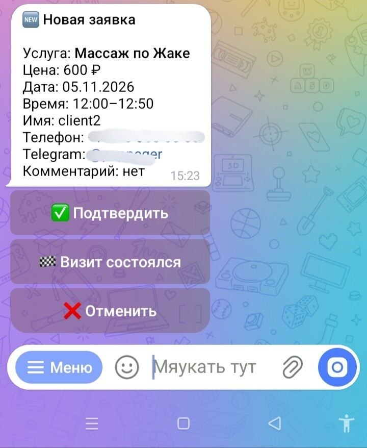
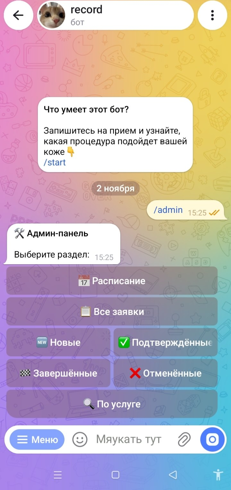
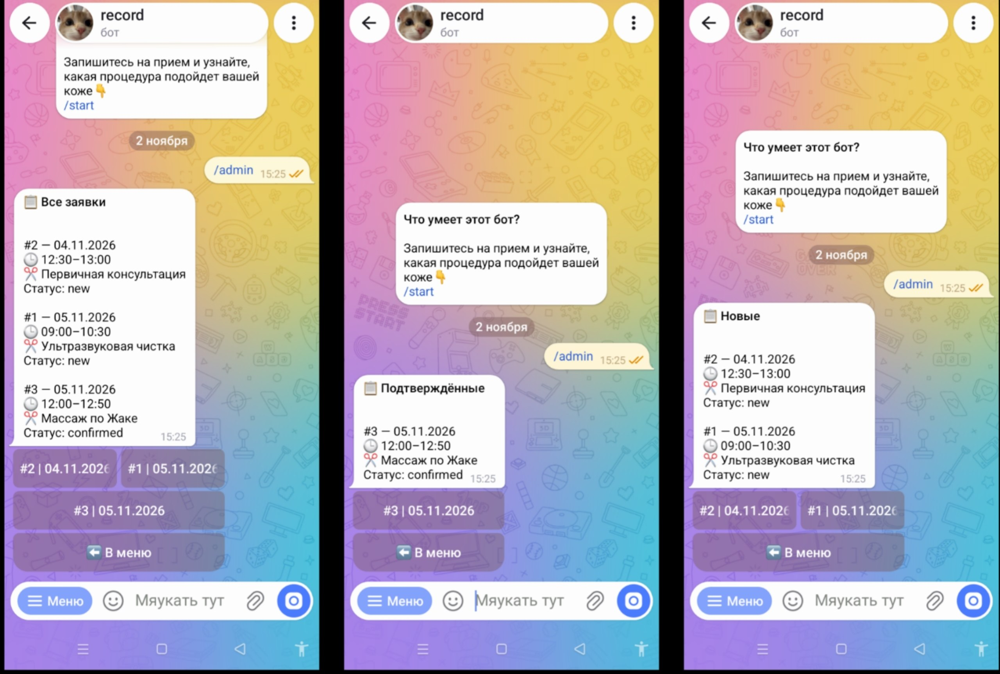
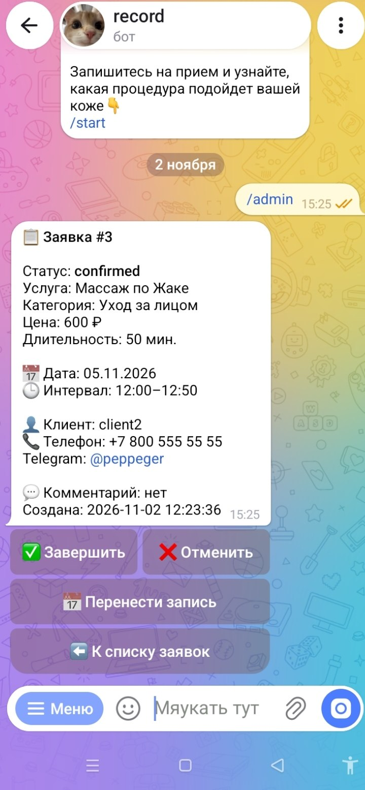
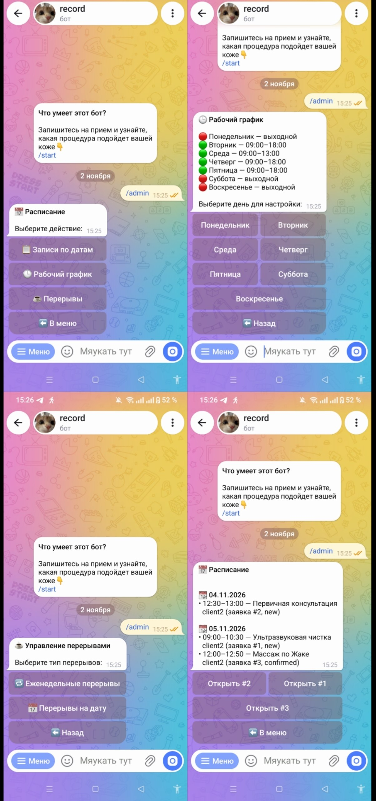

Запись клиентов — без лишней переписки
Бот помогает клиентам самостоятельно выбрать услугу, удобную дату и время, оставить контакты и отправить заявку. Владелец получает уведомление и управляет записями в административной панели.
Что умеет бот
Клиент проходит запись за несколько нажатий, а владелец получает заявку в удобном виде.
Выбор услуги
Клиент выбирает категорию и нужную услугу: уход за лицом, курс или консультацию.
Дата и время
Бот показывает доступные даты и время с учётом рабочего расписания и перерывов.
Заявка на запись
Клиент создаёт заявку, проверяет данные и подтверждает запись.
Контактные данные
Клиент может поделиться номером из Telegram или ввести его вручную.
Уведомления
О новой заявке владелец получает уведомление с основными деталями записи.
История записей
Клиент может посмотреть свои заявки и их текущий статус.
Как проходит запись
Простой сценарий без необходимости объяснять клиенту правила по сообщениям.
Выбор услуги
Клиент открывает бота и выбирает категорию и услугу.
Выбор времени
Бот предлагает доступные даты и свободное время.
Контакты
Клиент подтверждает номер телефона и при необходимости добавляет комментарий.
Уведомление
Владелец получает заявку и управляет её статусом.
Инструменты для владельца
Административная панель помогает не терять заявки и контролировать расписание.
Административная панель
Удобный доступ к заявкам и основным настройкам бота.
Просмотр и фильтрация
Заявки можно просматривать и фильтровать по нужным параметрам.
Управление статусами
Заявку можно подтвердить, отменить или отметить как завершённую.
Перенос записи
Запись можно перенести на другую дату и время.
Рабочее расписание
Настраиваются рабочие дни, часы работы и перерывы.
Примеры работы бота
Так клиент проходит запись: от выбора услуги до подтверждения заявки.





Административная панель
Владелец управляет заявками, статусами и расписанием прямо в Telegram.




Посмотрите, как это работает
Откройте бота в Telegram и пройдите запись как клиент: от выбора услуги до подтверждения заявки.
Открыть бота в Telegram